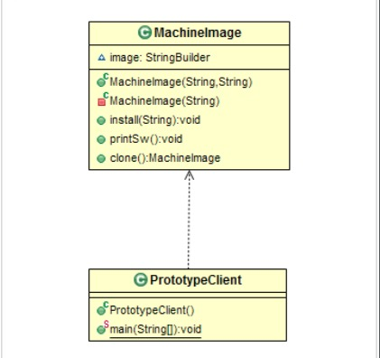

Prototype(原型，样板)
使用场景
- 在创建对象时候，即耗费内存，又占用时间的场景
- 简化和优化多个对象的创建，这些对象将具有大部分相同的数据
目的
使用原型实例指定要创建的对象类型，并通过复制此原型来创建新对象。组件
- 实现Cloneable接口的类（public）
结构体

代码实现
大多数云平台的行为类似于Prototype模式，可根据请求快速创建实例。这是通过预先安装的机器镜像实现的，当客户想要Windows或Linux实例时，云软件只是将已创建的机器镜像加载到服务器硬件上，而不是完整安装过程，这节省了大量时间。
1. 通过安装指定的操作系统和软件来创建基本计算机镜像，提供克隆方法，以便创建对象，而无需每次都耗时创建新的对象.
package me.chunsheng.gof.prototype;
/**
* @author wei_spring
* @projectName Doraemon
* @description: 创建类-> MachineImage
* @date 2020-05-2419:55
*/
public class MachineImage implements Cloneable {
private StringBuilder image;
public MachineImage(String os, String antivirusSW) {
image = new StringBuilder();
image.append(os)
.append(" + " + antivirusSW);
}
public MachineImage(String sw) {
image = new StringBuilder(sw);
}
public void install(String sw) {
image.append(sw);
}
public void printSw() {
System.out.println(image.toString());
}
@Override
protected MachineImage clone() throws CloneNotSupportedException {
return new MachineImage(this.image.toString());
}
}
2. PrototypeClient.
package me.chunsheng.gof.prototype;
/**
* @author wei_spring
* @projectName Doraemon
* @description: 创建类-> PrototypeClient
* @date 2020-05-2509:06
*/
public class PrototypeClient {
public static void main(String[] args) throws CloneNotSupportedException {
//创建两个实例
MachineImage linuxVM = new MachineImage("Linux", "Symantec");
MachineImage windowsVM = new MachineImage("Windows", "MaAfee");
MachineImage webServer = linuxVM.clone();
webServer.install(" + web Server S/W");
MachineImage webAPPServer = webServer.clone();
webAPPServer.install(" + APP Server S/W");
MachineImage dbServer = linuxVM.clone();
dbServer.install(" + DataBase Server S/W");
MachineImage testMachine = windowsVM.clone();
testMachine.install("test windows");
System.out.println("webServer SW");
webServer.printSw();
System.out.println("webAPPServer SW");
webAPPServer.printSw();
System.out.println("dbServer SW");
dbServer.printSw();
System.out.println("testMachine SW");
testMachine.printSw();
}
}
Output
webServer SW
Linux + Symantec + web Server S/W
webAPPServer SW
Linux + Symantec + web Server S/W + APP Server S/W
dbServer SW
Linux + Symantec + DataBase Server S/W
testMachine SW
Windows + MaAfeetest windows
Process finished with exit code 0
优点
- 性能方面，clone比直接new对象，消耗资源更少。
- 可以动态地创建对象，不需要一开始就创建对象，可以在用到时候，任意创建，复制对象。
缺点
- 深clone，需要小心，容易出一些隐藏问题，并且不容易被发现。
真实世界例子
生物细胞分裂。
例子
- 虚拟机镜像，每个操作系统都有一个镜像，其中包含所必须的软件。
- DVD的复制，复制主DVD，可以创建多个副本。
Java SDK 例子
- java.lang.Object clone()